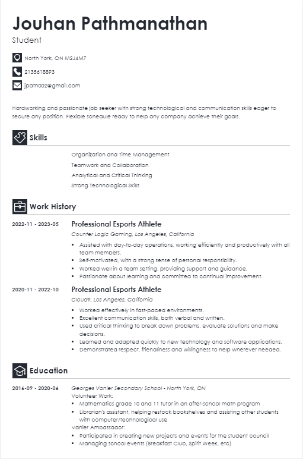

|
Jouhan Pathmanathan I'm 21 years old and I am a first-year student at York University majoring in Information Technology. I was born in Canada in October 14, 2002 and lived here the majority of my life. Coding and IT in general, sparked an interest in me when I was first in high-school taking courses involving Computer Technology (Robotics), Computer Science (Python) and Computer Engineering (Control Systems) where I enjoyed and spent most of my time and focus. Some additional hobbies I have are playing video games, basketball, working out, and playing chess. Chess / LeagueofLegends / Twitch / Facebook / Youtube / Twitter / |

|
ResearchSome of my projects include data analysis in video games, common trends in popular websites such as tier graphs on a chess website (Chess.com), daily/monthly/yearly player populations of a specific game (League of Legends). I'm deeply interested in how certain concepts of data could be manipulated to find importance in the information.

|